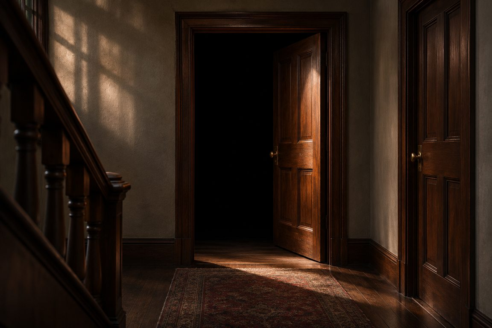

House of Leaves — Labyrinth, Uncanny Architecture and Impossible Evidence
Mark Z. Danielewski’s novel turns a house into an impossible space and its documentation into part of the story. Follow its layered narrators, contested evidence and links to contemporary liminal fiction.

On this page
Summary
House of Leaves by Mark Z. Danielewski is one of the strongest literary anchors for the uncanny-liminal-research-map category. It turns a house into an impossible labyrinth, turns academic apparatus into horror machinery, and turns reading itself into spatial navigation.
Inside the X Files wiki, its value is not that it is “true.” Its value is that it models how modern anomalous belief, weird archives, liminal architecture and documentary obsession can be built as a system.
What it actually contains
The novel is structured as nested documents:
- a fictional documentary called The Navidson Record
- a scholarly monograph about that documentary, written by the blind recluse Zampanò
- footnotes and editorial apparatus around Zampanò’s manuscript
- the unstable first-person layer of Johnny Truant, who discovers and edits the manuscript
- appendices, letters, citations, indexes and typographic experiments
The central anomaly: a family discovers that their house contains an interior space larger than its exterior dimensions. The home becomes a spatial impossibility.
Why it matters inside X Files
The book belongs in X Files because it is a complete machine for producing anomalous interpretation:
- impossible architecture
- unreliable witnesses
- fake scholarship
- documentary traces
- nested testimony
- occult-style over-reading
- trauma encoded as spatial horror
- a book layout that behaves like a maze
It is the literary equivalent of an anomalous case file.
Basic dossier
- Author: Mark Z. Danielewski
- Published: 2000
- Form: horror / metafiction / epistolary fiction / ergodic literature
- Core fictional object: The Navidson Record
- Central place: a house on Ash Tree Lane
- Central impossibility: inside bigger than outside
- Main figures: Will Navidson, Karen Green, Zampanò, Johnny Truant, Pelafina
- Companion text: The Whalestoe Letters
Narrative architecture
Layer 1 — The house
The house is the primary anomaly. It begins as domestic space and mutates into an impossible interior: hallway, rooms, staircases, corridors, abyss, maze.
The uncanny mechanism is direct: home becomes unhome.
This is Freud’s unheimlich almost literally staged. The safest symbolic place — the house — becomes non-domestic, non-measurable and hostile to orientation.
Layer 2 — The Navidson Record
The documentary layer makes the impossible feel evidentiary. Instead of simply telling the reader “there is a strange house,” the novel frames the anomaly as recorded footage, analysis and commentary.
This creates the same structure used by many X Files materials:
- anomalous event
- recording or trace
- secondary interpretation
- dispute over reliability
- obsessive archival reconstruction
Layer 3 — Zampanò’s manuscript
Zampanò’s scholarly text turns the house into an object of academic obsession. But the scholarship is unstable: many citations are fictional, inflated, misleading or impossible.
The book therefore satirizes expertise while also using the texture of expertise to intensify belief.
Layer 4 — Johnny Truant
Johnny is not a neutral editor. His notes become a parallel psychological collapse. The more he edits the manuscript, the more the manuscript seems to infect his reality.
This is crucial: the anomaly is not confined to the house. It spreads through reading.
Layer 5 — The reader
The reader must rotate pages, follow footnotes, navigate fragments, skip, return, inspect layout and tolerate missing certainty. The book makes reading physically labyrinthine.
This is why it is often discussed as ergodic literature: the path through the text requires nontrivial work.
The house as liminal object
The house is liminal because it is always between categories:
- home / non-home
- inside / outside
- measurement / impossibility
- shelter / threat
- architecture / organism
- documentary object / myth
- private trauma / cosmic void
The hallway is especially important. A hallway is already a threshold structure, made for passage. In the novel, the hallway becomes destination, trap and abyss.
The uncanny mechanics
1. Domestic space becomes alien
The familiar object is not a haunted castle. It is a modern family house. That makes the horror stronger because the familiar category fails.
2. Measurement fails
The rational response is measurement: tape, compass, camera, map, expedition. But the house defeats measurement. The more precisely characters document it, the more the anomaly expands.
3. Evidence multiplies uncertainty
Normally, documents stabilize facts. In House of Leaves, documents generate more doubt. Every layer of commentary adds possible evidence and possible contamination.
4. The void refuses symbolism
The black interior can be read as trauma, death, depression, family breakdown, cosmic indifference, textuality, grief, absence or pure spatial impossibility. None of these readings fully exhaust it.
5. The reader becomes explorer
The book’s form copies the house’s logic. A page can be empty, cramped, sideways, spiraling, fragmented. The reader experiences the labyrinth as layout.
Secrets, mysteries and unresolved questions
Is The Navidson Record real inside the world of the novel?
Within the fiction, it is treated as an object of analysis. But the surrounding apparatus constantly destabilizes it. The reader cannot fully secure the chain of custody.
X Files reading: this resembles an anomalous archive where the primary evidence is always mediated.
Did Zampanò invent it?
Zampanò is blind, which makes his elaborate descriptions of a film suspicious. Either he reconstructed it from other sources, invented it, or the manuscript itself operates by impossible logic.
This is one of the novel’s strongest mysteries: the blind archivist describes visual evidence with obsessive precision.
Is Johnny being haunted by the manuscript?
Johnny’s deterioration can be read psychologically, supernaturally, textually or as trauma activation. The book never requires one answer.
Useful interpretation: the manuscript is a memetic labyrinth. It changes the person who tries to organize it.
What is the house?
Possible readings:
- a literal spatial anomaly
- a haunted house without a ghost
- grief architecture
- the unconscious made spatial
- a black box of family trauma
- a parody of critical interpretation
- a textual machine that consumes readers
- a mythic labyrinth updated for media culture
Why is the word “house” often marked in blue?
The blue “house” has many reader interpretations: hyperlink, architectural marker, sacred/charged word, wound, portal, or visual anchor. It also makes the printed book behave like a coded object.
What is the minotaur layer?
The novel repeatedly gestures toward labyrinth mythology, including the Minotaur, but also withholds and fragments that layer. The Minotaur becomes less a monster than a deleted/hidden organizing myth.
X Files reading: the monster is not always an entity. Sometimes the monster is the structure.
What is the role of Pelafina and The Whalestoe Letters?
Pelafina’s letters deepen the family/trauma layer around Johnny. They complicate the idea that the book is only about Navidson’s house. The “house” can also be lineage, inherited damage, memory and language.
Suppositions / major interpretive theories
Theory A — The house is trauma externalized
The impossible interior represents unprocessed trauma: it is bigger inside because what is hidden in a family is larger than the visible household.
Strength: explains domestic setting, relational breakdown and psychological spread.
Limit: may reduce cosmic ambiguity to psychology.
Theory B — The house is pure cosmic horror
The interior is not symbolic; it is contact with an indifferent spatial void. Humans try to map it, narrate it and domesticate it, but it exceeds them.
Strength: preserves the terror of scale and unknowability.
Limit: underplays the book’s intimate family and editorial layers.
Theory C — The book is the real labyrinth
The physical house may be less important than the textual machine. The reader is the one navigating corridors, false leads, dead ends, indexes and typographic traps.
Strength: explains the layout and ergodic structure.
Limit: can become too meta and detach from the story’s emotional stakes.
Theory D — Zampanò / Johnny / Navidson mirror each other
Each male figure tries to control chaos through recording, writing, editing or exploration. Each becomes trapped in the system he attempts to master.
Strength: links the nested narrative layers.
Limit: does not solve the ontological mystery.
Theory E — The house is an anti-archive
An archive normally stores and orders memory. The house stores absence. The more documentation accumulates, the less stable reality becomes.
Strength: very useful for X Files because it connects to document culture, fake evidence, classified files and found footage.
Relation to liminal spaces
House of Leaves predates the 2019–2020 liminal-space internet boom, but it anticipates many of its emotional rules:
- empty interiors as threat
- corridors as unresolved thresholds
- architecture without stable scale
- domestic nostalgia becoming dread
- found footage / pseudo-documentary framing
- unexplained spatial expansion
- evidence that feels both official and cursed
The book can be read as a pre-Backrooms master text: the Backrooms are an infinite office; House of Leaves is an infinite house.
Relation to Backrooms
Similarities:
- impossible interior space
- navigational horror
- ordinary architecture turned infinite
- uncertain documentation
- survival/exploration logic
- absence of stable origin
Differences:
- Backrooms is collective internet folklore; House of Leaves is authored literary machinery.
- Backrooms begins with an image/premise; House of Leaves begins with layered texts and commentary.
- Backrooms externalizes liminality into levels; House of Leaves internalizes it into reading, family and trauma.
Relation to analog horror and pseudo-documentary culture
The novel is not analog horror in the YouTube sense, but it shares the same evidence aesthetic:
- found media
- editorial apparatus
- scholarly claims
- footage analysis
- nested documents
- uncertainty over authenticity
- bureaucratic/scholarly tone around impossible events
This makes it a useful bridge between literary horror and Kane Pixels / SCP / found-footage internet lore.
Relation to the wider wiki
X Files main area
x-files uses this note as a major anchor for the Uncanny / Liminal category.
Uncanny / Liminal category
uncanny-liminal-research-map provides the theory. This note provides the literary case study.
Backrooms
backrooms-liminal-spaces-deep-dive and backrooms-kane-pixels-timeline are internet-lore descendants/parallel cases.
CIA / remote viewing
The relation is formal: both create a documentary interface with uncertain claims. Stargate files are real documents with controversial claims; House of Leaves is fictional documentation that teaches how evidence aesthetics seduce the reader.
Mars / anomalies
The relation is interpretive: both ask whether strange surfaces and measurements imply hidden structure. Mars anomaly discourse reads images; House of Leaves reads architecture.
Critical reading
What the book clearly does
- uses impossible architecture as horror
- turns reading into spatial navigation
- destabilizes the authority of documents
- uses footnotes and academic tone as narrative devices
- connects domestic space with cosmic scale
- makes interpretation itself feel dangerous
What should not be overstated
- It is not evidence of a real paranormal house.
- Reader theories are productive but often mutually incompatible.
- The book’s “secrets” are structural and interpretive more than puzzle-box solutions.
- Treating one theory as final weakens the work.
Best X Files stance
Use House of Leaves as a model for how an anomaly becomes believable through layers: place → recording → archive → commentary → obsession → community interpretation.
Reusable pattern for future notes
When analyzing similar works, ask:
- What is the anomalous space?
- What evidence format presents it?
- Who controls the archive?
- Where does reliability break?
- How does the format make the reader/viewer participate?
- What ordinary category becomes unhomely?
- What remains unresolved after interpretation?
Source notes
Local extracts were preserved from source pages on House of Leaves, ergodic literature, the uncanny and liminality. These are orientation sources. Future deepening should add direct primary quotations from the novel and scholarly criticism.
Related
x-files uncanny-liminal-research-map backrooms-liminal-spaces-deep-dive backrooms-kane-pixels-timeline wiki-improvement-roadmap